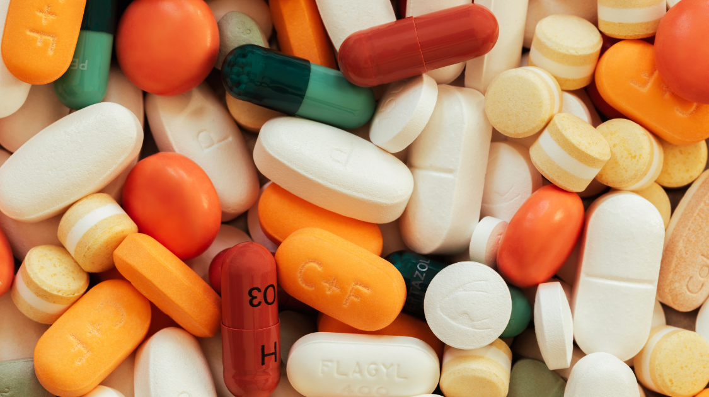

Student Life
7 Years of Toxic Drugs
By Owen Hu | Published May 11, 2022 2:38 p.m. PST

165 deaths from toxic drugs in March 2022. Averaging more than five deaths per day, the dangerous use of toxic drugs now contributes the most to preventable deaths in British Columbia. Since a state of public health emergency was declared in April of 2016, the rate of overdose deaths has doubled, with hundreds of beloved community members losing their lives monthly. So, how did BC get to this point?
Unfortunately, the large and lucrative illicit drug market is a root cause of the overdose crisis. In 2020, a drug dealer, under the pseudonym John Doe, released a formal assessment of his participation in the illegal drug trade after being convicted. Describing profits of $6000 per month from opioid sales alone, Doe emphasized how, despite being immoral and oftentimes dangerous, the drug market is extremely profitable for dealers and drug buyers alike. From a business perspective, the large number of potential customers, especially around areas like the Downtown Eastside in Vancouver, along with bankable profit margins makes the circulation and distribution of drugs attractive for dealers.
More potent drugs, such as fentanyl, a synthetic opioid, is also driving the high death rate. With over 19% of all overdose deaths being linked to extreme concentrations of fentanyl, the potency of drugs being circulated is stronger than ever. Moreover, the trend of mixing toxic drugs, such as between benzodiazepines, a psychoactive tranquilizer, and opioids, makes for a dangerous combination on the streets, especially since illicit drug trades seldom, if ever, come with safety warnings or proper usage guides.
Due to these factors, British Columbia has seen a devastating number of loss of life since April 2016. The over 500 deaths from January to March of 2022 alone adds to the growing count of almost 10,000 killed since the public health emergency was declared. Although it can become all too easy to trace these numbers down to just numbers, it’s important to remember that these are people—community citizens, family members, friends, and colleagues.
In response, the British Columbia government has pledged several initiatives. Since 2017, the government has financed $322 million to decrease stigmatization and increase accessibility to addiction services. The Community Crisis Innovation Fund, an over $3 million grant to integrate communities with overdose help, was also launched to help fund intervention efforts during life-threatening overdoses. Although critics argue that these solutions are not innovative enough and have only seen limited success, they are still a step in the right direction: a path towards ending the excessive and sad loss of British Columbians.
For now, there are encouraging signs of a recovery. The death rate in 2022 is slightly down from over 200 a month in the last quarter of 2021. Nonetheless, British Columbia's opioid crisis remains a contentious topic for the addicted—one that represents the decision between life and death.